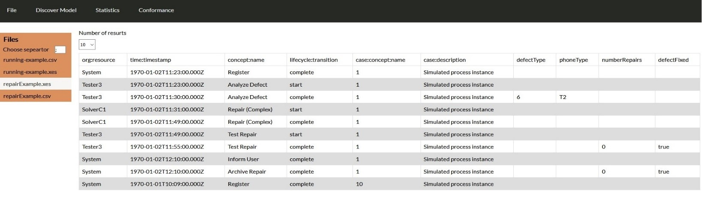

View¶
When the user selects the view option, he can either choose a xes or csv file and an html table will appear with the content of file.
The web interface reads the whole table with post from python flask and when the user changes the number to results dropdown to 10, then the html table shows the first 10 rows, when the user changes the number to results dropdown to 50, then the html table shows the first 10 rows and when the user changes to the dropdown to all then html table shows all the rows. Until the response is returned from the API react-loader-spinner is used (https://www.npmjs.com/package/react-loader-spinner).